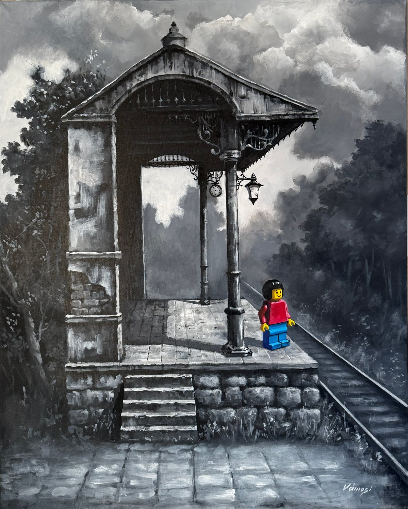

Maler · Tätowierer · Selm
Tamás Vámosi – Maler, Tätowierer

Hallo zusammen! Ich bin Tamás Vámosi und male seit über dreißig Jahren. Es ist mir eine Freude, alltägliche und außergewöhnliche Geschichten mit Farbe auf Leinwand zu erzählen – Geschichten, die mir jemand aus einer unbenennbaren Region anvertraut hat…
Herzlich willkommen, liebe Besucherin, lieber Besucher, in dieser Welt!
Porträts nach Fotovorlage
Gerne male ich auch Porträts nach Fotovorlage – für Kunden in Selm, Lünen, Werne, Olfen, Lüdinghausen und Umgebung. Schreiben Sie mir für Details oder ein Angebot eine E-Mail!
Kontakt
Sie wohnen in Selm oder Umgebung und haben eine Frage zu einem Gemälde, oder möchten ein Porträt in Auftrag geben? Schreiben Sie mir eine E-Mail!
vamosifestmenyek@gmail.com